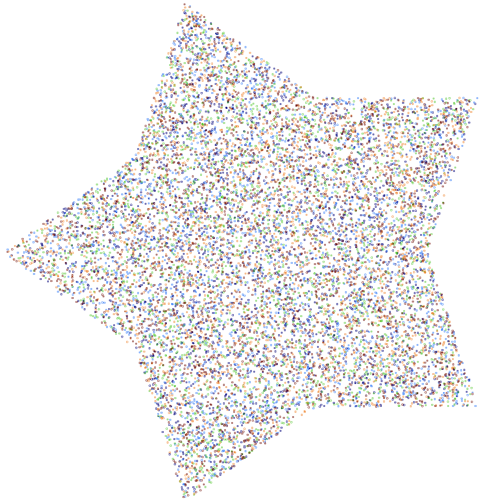
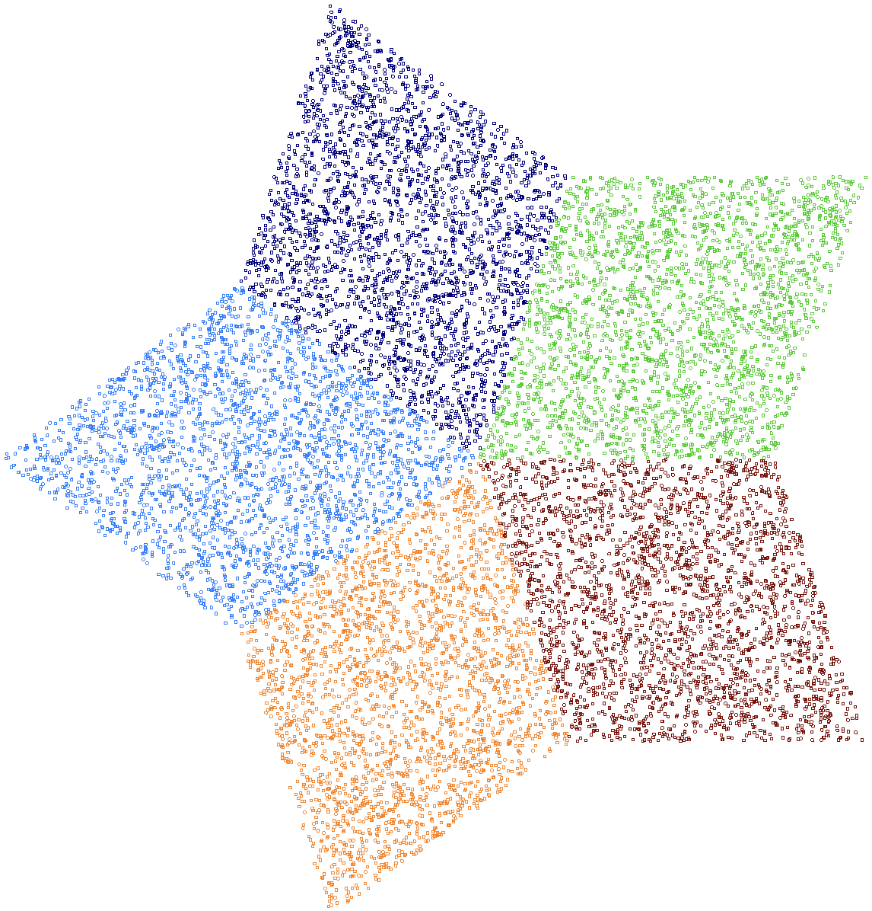
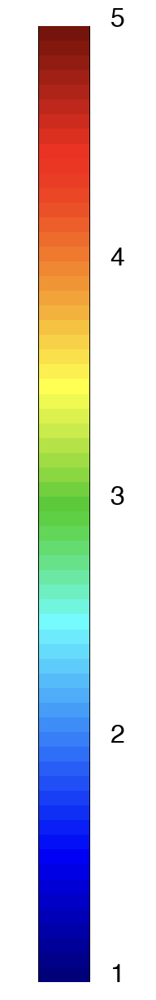

Particles
MFEM now includes a scalable framework for particle-based discretizations, supporting a wide range of applications such as tracer particles in incompressible flow, one-way coupled charged particles subject to Lorentz forces, and two-way coupled electrostatic Particle-in-Cell simulations. The framework integrates seamlessly with existing MFEM abstractions such as meshes and grid functions.
The framework introduces three core particle abstractions:
- ParticleSet: primary interface for interacting with the particle framework; it manages particle data such as spatial coordinates, fields (e.g., mass, momentum, and energy), tags (e.g., color, and order of time integration), and globally unique IDs, in both serial and parallel.
- ParticleVector:
derived from
mfem::Vector, theParticleVectorcontainer is used inside theParticleSetclass to store a scalar or vector field for all particles, with a separateParticleVectorfor each field. - Particle: a convenience container for data associated with a given particle.
Together with FindPointsGSLIB, these classes provide the building blocks for particle tracking and particle-mesh coupling in MFEM.
The key features of the new particle framework are:
- arbitrary number of scalar (e.g., mass) and vector fields (e.g., velocity)
- arbitrary number of integer tags (e.g., color)
- GPU support for all particle data
- globally unique particle IDs for convenient post-processing
- particle migration across MPI ranks with
ParticleSet::Redistribute() - coupling with finite element mesh and grid function through
FindPointsGSLIB - ParaView visualization through CSV output with
ParticleSet::PrintCSV() - GLVis visualization for particle cloud and trajectories with new utilities in miniapps/common/particles_extras.hpp
Learn more about the framework from the Particles in MFEM (🎬) presentation at the MFEM Community Workshop 2025.
Visualized below is a snapshot from a simulation (🎬) where particles are injected into the MFEM mesh at random positions and velocities, with perfectly elastic collisions to model interaction with domain boundaries.
Particle Miniapps
Lorentz Miniapp
The lorentz
miniapp demonstrates one-way coupled charged particle motion due to electric and
magnetic fields using the Boris algorithm.
The input grid functions are generated using the
volta and
tesla miniapps, and
these are subsequently used in lorentz with
FindPointsGSLIB to move particles.
{kind=link}
Navier Bifurcation Miniapp
The navier_bifurcation miniapp demonstrates one-way coupled tracer particles in incompressible flow (🎬). Particles are injected at the inlet of a 2D bifurcating channel, and move due to the drag and lift forces exerted on them by the surrounding fluid.
Electrostatic PIC Miniapp
The electrostatic-pic miniapp demonstrates two-way coupled Particle-in-Cell simulation (in 2D or 3D spatial dimensions) with charged particles subject to electric field forces. At each time step:
- particles deposit charge to the mesh,
- a Poisson problem is solved for the electrostatic potential,
- electric field grid function is computed using the gradient of the potential,
- the electric field is interpolated at particle locations,
- particle positions are updated under the effect of electric field.
This loop is repeated for a user-specified number of time steps.
Particles Redistribute Miniapp
The particles_redist
miniapp is a compact demonstration of parallel particle redistribution.
Particles are initialized randomly over the global mesh on each rank.
Since particles may not initially reside on the same rank as the mesh element
that overlaps them, particle-mesh coupling can become communication intensive.
ParticleSet::Redistribute() moves each particle to the rank of the overlapping element.
Visualized below is output from one of the sample runs of the particles_redist miniapp.


